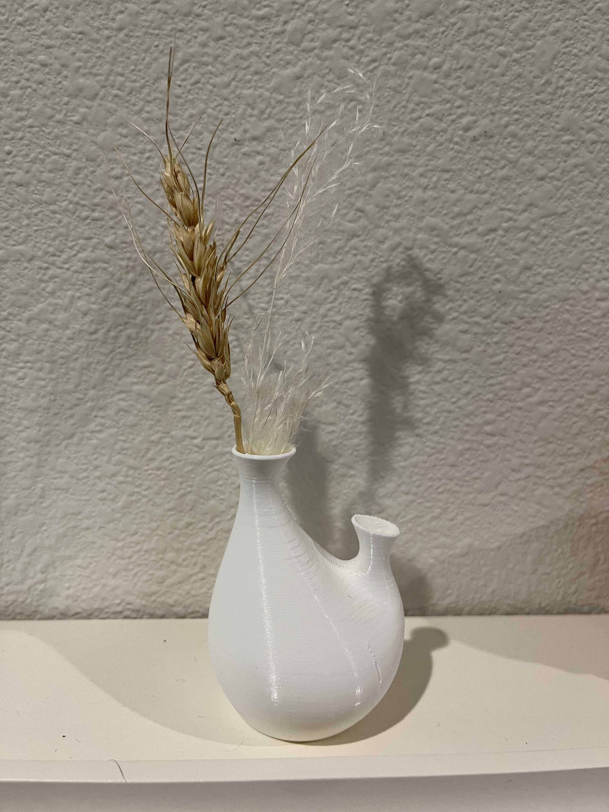
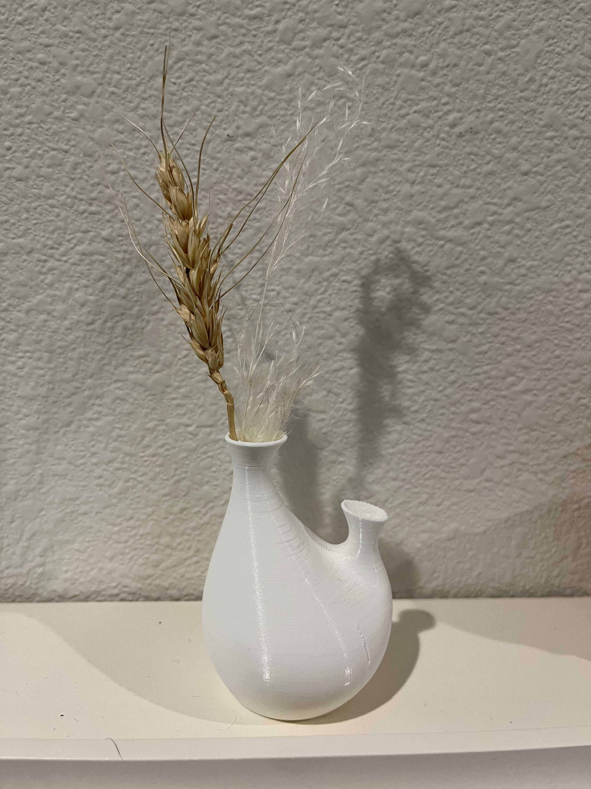

A3: Getting started with 3D printing!
Assembly
Assembly of the Ender took me around 2 hours. The printer's instructions are straightforward
and clear enough to follow. It’s great that they numbered all fasteners and provided all the tools I needed to assemble them.
I usually like to browse the steps before starting, which also helped me this time. So I started step 3 to assemble the z-axis
endstop onto the left support switches before connecting the two supports to the stand. I put the nut horizontally instead of
vertically to ensure it doesn’t pop out of the gap and should be tight enough.
Level the bed
After finishing the assembly, I started to level the bed. The aim of bed leveling is to ensure
the nozzle is very close to the bed at all four points. To adjust this, I first chose “auto home” from the dial to move
the nozzle to [x=0, y=0, z=0] and disabled the steppers to be able to adjust the position of the nozzle by myself manually.
Then, I put a piece of letter paper under the nozzle. By tuning the four-wheel screws under the bed, I made sure it could
barely move between the nozzle and the bed when moving the nozzle.
Testing it out
I printed the gcode file: CHEP_bed_level directly and it looks great!
Test prints
The following table list all test prints about their print time, material estimation,
dimensions measured by the caliper.
| Prints | Dimensions (mm) | Print time (min) | Material estimation | ||||||||||||||||||||||||||||||||||||||||||||||||||||||||||||||||||||||||||||||||
|---|---|---|---|---|---|---|---|---|---|---|---|---|---|---|---|---|---|---|---|---|---|---|---|---|---|---|---|---|---|---|---|---|---|---|---|---|---|---|---|---|---|---|---|---|---|---|---|---|---|---|---|---|---|---|---|---|---|---|---|---|---|---|---|---|---|---|---|---|---|---|---|---|---|---|---|---|---|---|---|---|---|---|---|
| Cubes | Width | Hight | Depth | Estimated | Actual | (g), (m) | |||||||||||||||||||||||||||||||||||||||||||||||||||||||||||||||||||||||||||||
| A 2cm cube with the standard "low quality" settings | 20.19 | 19.99 | 20.06 | 20 | 22 | 4g, 1.36m | |||||||||||||||||||||||||||||||||||||||||||||||||||||||||||||||||||||||||||||
| A 2cm cube with the standard "standard quality" settings | 19.83 | 20.04 | 20.11 | 26 | 28 | 4g, 1.28m | |||||||||||||||||||||||||||||||||||||||||||||||||||||||||||||||||||||||||||||
| A 2cm cube with the standard "super quality" settings | 19.87 | 19.99 | 20.04 | 50 | 51 | 1 | |||||||||||||||||||||||||||||||||||||||||||||||||||||||||||||||||||||||||||||
| A 2 cm cube with a concentric top and bottom layer (low quality settings) | 19.90 | 20.10 | 20.05 | 20 | 22 | 4g, 1.35m | |||||||||||||||||||||||||||||||||||||||||||||||||||||||||||||||||||||||||||||
| Tubes | Diameter | Hight | Wall thickness | Estimated | Actual | (g), (m) | |||||||||||||||||||||||||||||||||||||||||||||||||||||||||||||||||||||||||||||
| A tube 3cm in diameter and 3cm high with a single extrusion wall thickness | 30.01 | 29.98 | 3.22 | 30.01 | 38 | 5g, 1.52m | |||||||||||||||||||||||||||||||||||||||||||||||||||||||||||||||||||||||||||||
| A tube 3cm in diameter and 3cm high with a double extrusion wall thickness and random z-seam alignment | 30.07 | 29.94 | 3.21 | 46 | 47 | 6g, 2.15m | |||||||||||||||||||||||||||||||||||||||||||||||||||||||||||||||||||||||||||||
| Cylinders | Diameter | Height | Estimated | Actual | (g), (m) | ||||||||||||||||||||||||||||||||||||||||||||||||||||||||||||||||||||||||||||||
| A cylinder 3cm in diameter exported with a 0.1mm tolerance | 29.86 | 19.74 | 29 | 30 | 6g, 2.15m | ||||||||||||||||||||||||||||||||||||||||||||||||||||||||||||||||||||||||||||||
| A cylinder 3cm in diameter exported with a 0.001mm tolerance | 29.99 | 19.70 | 29 | 32 | 6g, 2.17m | ||||||||||||||||||||||||||||||||||||||||||||||||||||||||||||||||||||||||||||||
| A cylinder 3cm in diameter with special mode "spiralize outer contour" | 29.90 | 19.95 | 16 | 15 | 2g, 0.65m | ||||||||||||||||||||||||||||||||||||||||||||||||||||||||||||||||||||||||||||||
| A cylinder 3cm in diameter printed on its side with supports on | 30.02 | 20.03 | 34 | 41 | 7g, 2.21m | ||||||||||||||||||||||||||||||||||||||||||||||||||||||||||||||||||||||||||||||

Nested object
What I wanted to design is a vase with two holes that have addons to hold photos and flowers at the same time.
I used SubD Tools in Rhino to build the vase and addons. I tried twice to print it out. For the first time, I printed a vase by setting it with the special mode "spiralize outer contour."
The thickness was not enough to stick to each line together, so it was loose in the middle of the vase. After I added the
thickness by using the command offsetsrf to the vase, it looked great!

 


Acknowledgement:
Junchao TA helps a lot with how to add thickness to the vase.
Return to home